第一节 片段阅读
主旨概括–关联词语
言语理解中的重点
基础、重点
✅标志
- 这段话主要讲述（谈论、强调、说明、阐明、阐述、介绍）的是？
- 这段文字的主旨、关键词、中心议题、旨在说明什么？
- 对这段文字的
概括（复述、归纳、总结）最准确的是？
🚩做题的原则
- 找题眼，文段主题句
- 对比选项进行转换，【同意替换、精简压缩】
- 通常为对策或核心观点
- 题眼为问题，找对策
- 题眼为观点，归纳核心观点
- 优选忠于原文的题眼的选项。
🚩解题技巧
- 宏观–
行文脉络–> 文章结构 - 微观–
关联词–> 逻辑标志
转折复句
【典型格式】
➢ 虽然……但是……
➢ 其实=事实上=实际上=只是=当然
【关联词语】
➢ 虽然=尽管=虽说=固然
➢ 但是=可是=不过=然而=却
【总结】
重点在转折之后
结论复句
【典型格式】
因为……所以……
【关联词语】
➢ 因为=由于
➢ 所以=因此=因而=可见=看来=导致=造成=使得=致使=总之=故而=言而总之=综上所述=概而言之=概而论之
【特殊格式】
之所以……是因为。.. ===> 强调原因
【典型例句】
- 物价上涨关系到每一个消费者的切身利益，影响着相当一部分普通百姓的日常生活，并且可能给低收入家庭带来沉重压力。
因此对物价上涨不能掉以轻 心。
2.《淮南子·人间训》云：“众人皆知利利而病病，唯圣人知病之为利，利之为病 也。”看来古人已经注意到利弊的辩证关系。
于是的作用
- 结论
- 顺城时间、背景；
递进复句
【典型格式】
不但……而且…… 如：大别山区不但矿产很丰富，而且自然景色很美。
【关联词语】
➢ 不但=不仅=不单=不独=不只=不光
➢ 而且=并=并且=也=还
➢ 甚至=更=特别=尤其=重要的是=关键的是=核心的是
【多重递进】
不但……而且……甚至……
【典型例句】
- 黄金
不只是一种名贵的金属，也是一种不需要翻译的万能语言。 - 寿昌
不仅学习戏里的唱腔身段，还从母亲那里弄些碎布学剪戏中的人物。 - 来这家大型食品超市购物的不仅有当地的家庭主妇，而且有附近街区的居民，
甚至京津地区也有驱车前来采购的。
【总结】
- 递进复句重点在递进之后
- 一级递进与二级递进同时出现，
二级递进是重点
这个题目的答案是 C，但是选择了 D，是因为看到了最后一句话
经过对比
- 要说的是雷锋相关，D 项说的是人们
- 任何时代，这个过于夸大
- 在 C、D 中选择，C 项更合适。
✅解题过程
- 确定了主题词–汽车行业，递进-不仅-而且，重点在后边，
- 得出结论 汽车行业 & 相关产业 的关系。
❌错误分析
- 整体找的重点没有错
- 递进之后很长，需要概括，不能直接取其中一部分，就要对比选项。
- A B 是部分，C 是背景
- D 是完整的
概括递进之后的内容
必要条件复句
【典型格式】
只有…【重点】…才……
【关联词语】
显性：只有=必须=需要=应该=应当=务必=除非=如何=怎样等
隐性：才
【典型例句】
- 传统相声艺术只有
回到群众，回归生活，才能获得新的生命力。 - 汽车企业在发展的同时采取新的技术措施，尽量减少对环境的污染，符合社会发展大趋势，
才是长久之策。
【总结】
- 重点是
必要条件 - 主要找
才， 显性/隐性 都在才之前
【转换格式】
只有 A，才 B
B 必须 A = 不 A 则不 B = A 是 B 的必要条件（必备要素、不可 或缺、必不可少、前提、基础、保证、保障） = B 以 A 为必要条件
✅解题过程&注意事项⚠️
- 主题词、重点位置找对了，思路也还行。
- 根据主题词，可以排除 A D，【可以优化思路–排除】
快速读题有待加强
并列复句
【典型格式】
既……又……
申论也可以用
1．表示相关的几种情况并存。
【关联词语】
单用：而=又=同样=同时=与此同时=另外=此外=再说=并且=加上等。
双用：也……也；又……又；既……又；一边……一边；有的……有的；一方面…… 另一方面。
2．表示两种相反或相对的情况。
【关联词语】
不是……而是：不是 A，而是 B =》 A = -B
有的……有的
【表现形式】
- 关联词语
- 标点符号：顿号、分号、逗号（句式一致）
- 表达并列内容的分句关系（隐性并列，藏于句中）
【总结】
- 重点：没有重点，主旨是 A + B
- 没有语序要求，可以调整前后关系
- 分句间的并列关系、标点负号的使用。
✅解题过程&注意事项⚠️
- 么有找到并列的关键词
主旨概括–行文脉络
- 总–分–总
- 点明观点–阐述原因/举例论证–重申观点 –>
重点首尾句需要结合 - 提出问题–分析问题/举例论证–解决问题 –>
重点解决问题
- 点明观点–阐述原因/举例论证–重申观点 –>
- 分–总
- 总–分
- 分–总–分
总–分–总
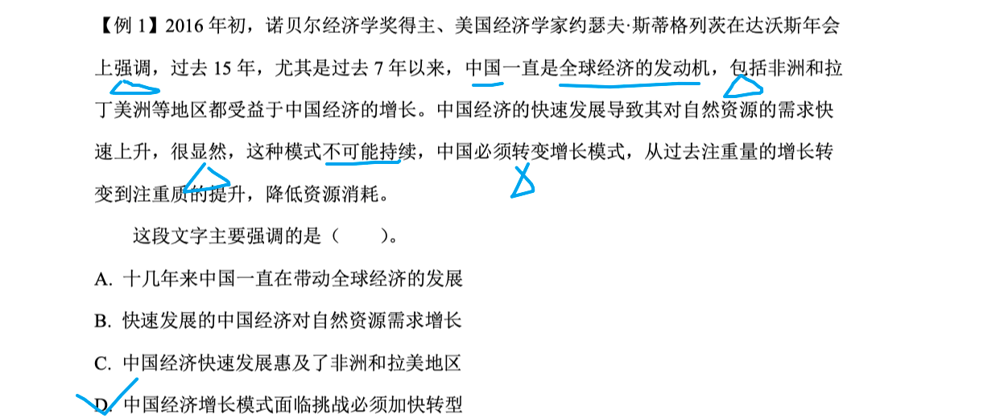 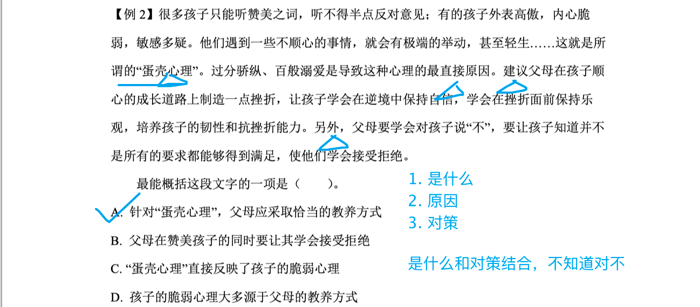 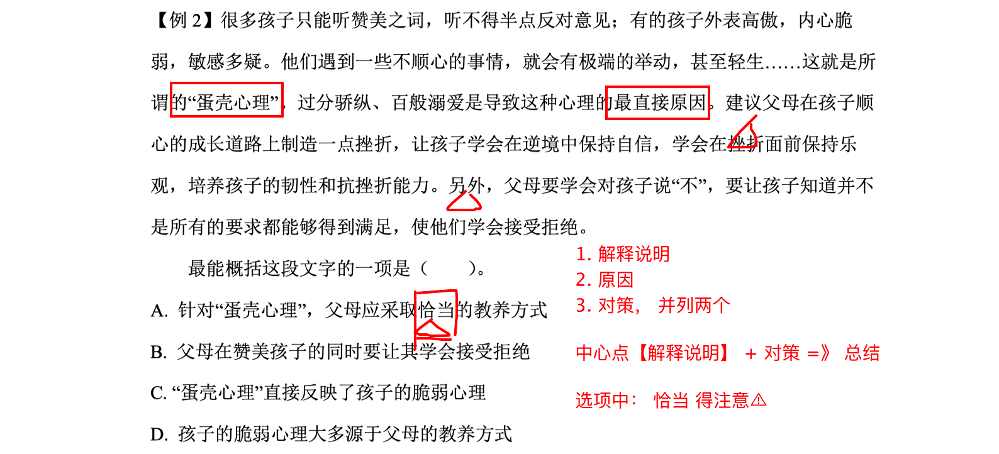总–分
- 提出观点–解释说明 –>
重点观点 - 提出问题–举例论证 –>
重点问题
分论点中的转折不重要
分–总
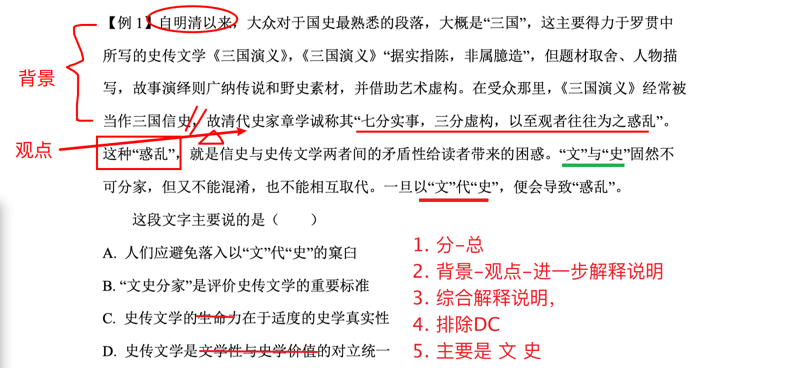分–总–总
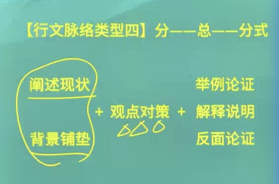
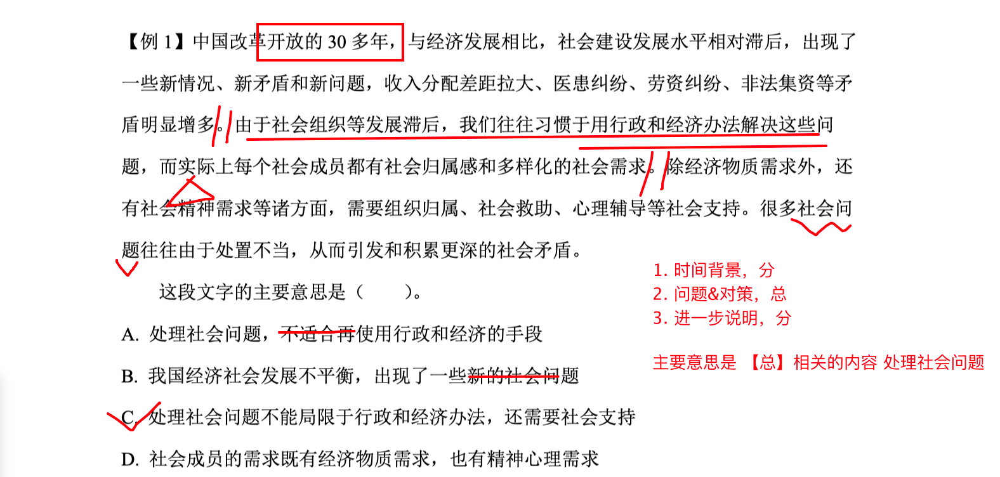 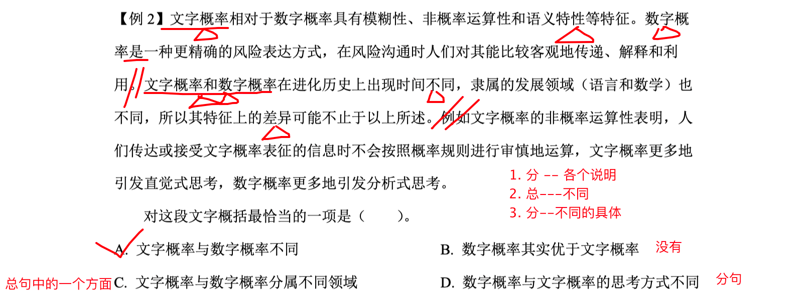 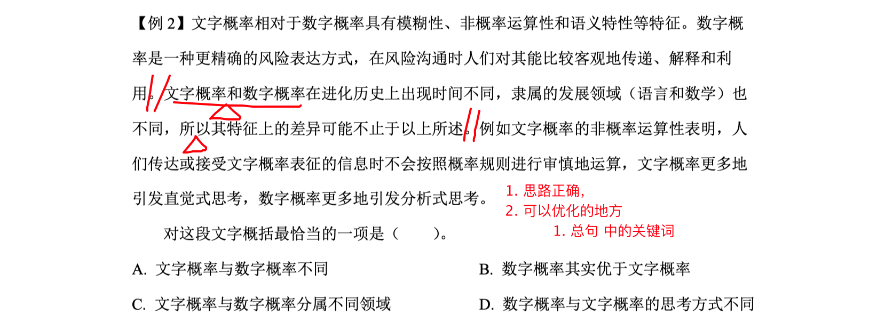难度提升
无关键词，需要归纳概括
整体概括法
关注主体
重现关键词
关注重复出现的词汇
提问方式变化，方法依旧
关键词语类
其他提问类
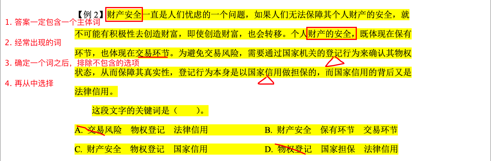 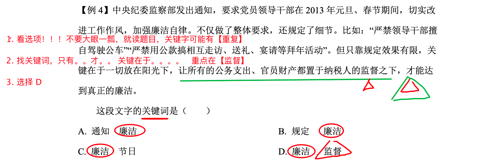
意图判断
意图题基于主旨题
辨别标志
➢ 这段文字意在说明（阐明、强调）的是？
➢ 通过这段话，作者想表达（说明）的是？
➢ 通过这段话，我们可以知道？
➢ 这段话告诉我们？
➢ 从这段文字中可以推出的是？
➢ 根据这段文字，可以看出作者的意图是？
做题原则
- 通读原文，把握文段重点
优选作者的目的、意图、出发点次选主旨类型的答案- 排除
引申过度、表意肤浅、不符合生活规律、社会主旋律的选贤
社会现象类
社会现象类
消极社会问题–针对
现象、问题找对策积极/中性社会问题–总结归纳观点
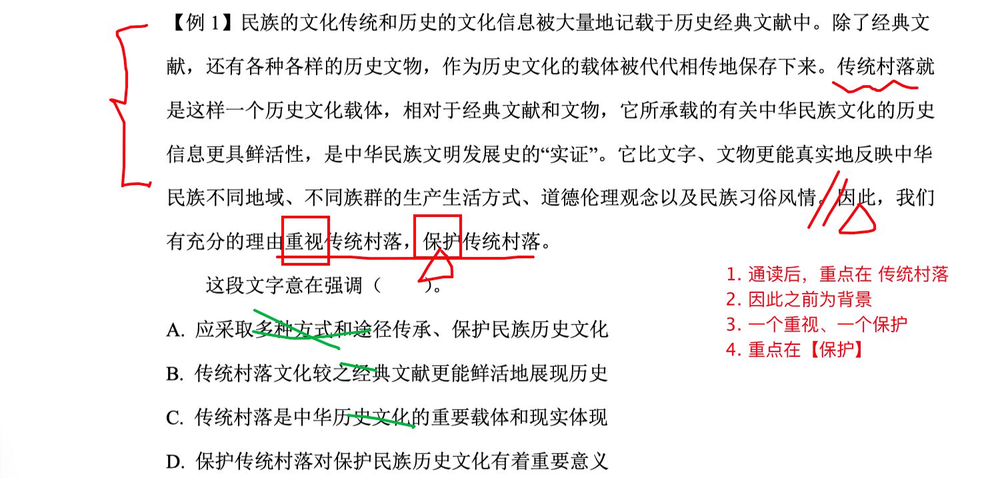 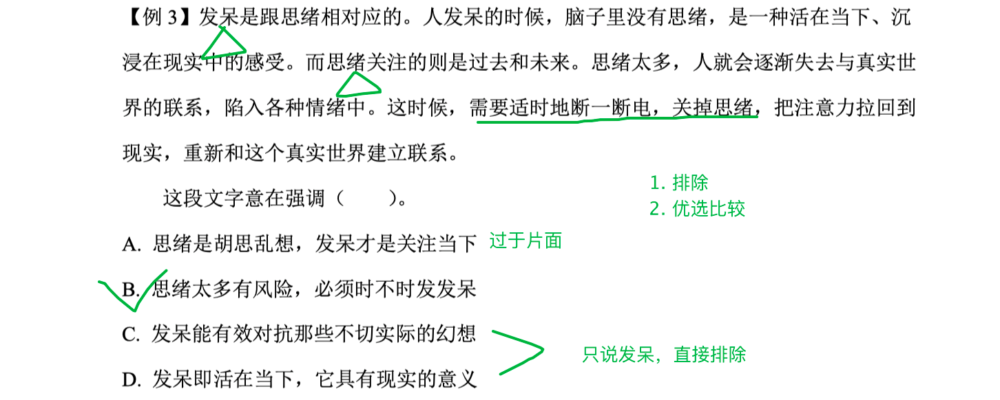 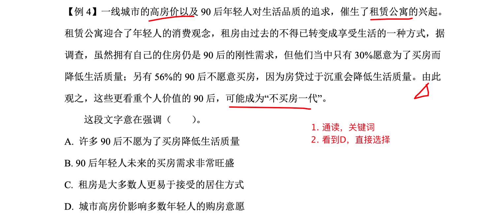
错误分析
- 没有按步骤解题
- 通读+重点：
高房价 生活质量 90后 - 围绕重点，D项扩大了范围
- 意图题选项都得看👀
- 通读+重点：
故事寓意类
- 寓意主体往往在故事
3/4处的结尾有所反应，常有于是、后来的词引出故事的高潮； - 寓意选项要与文段关联
C有点过度了，主要是幽默。
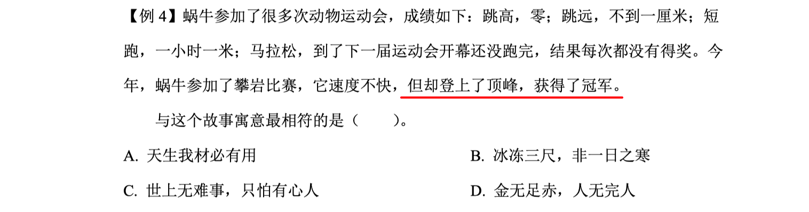 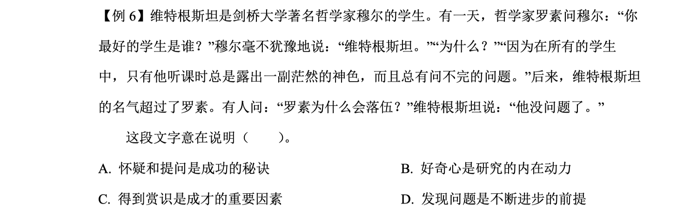排除选项
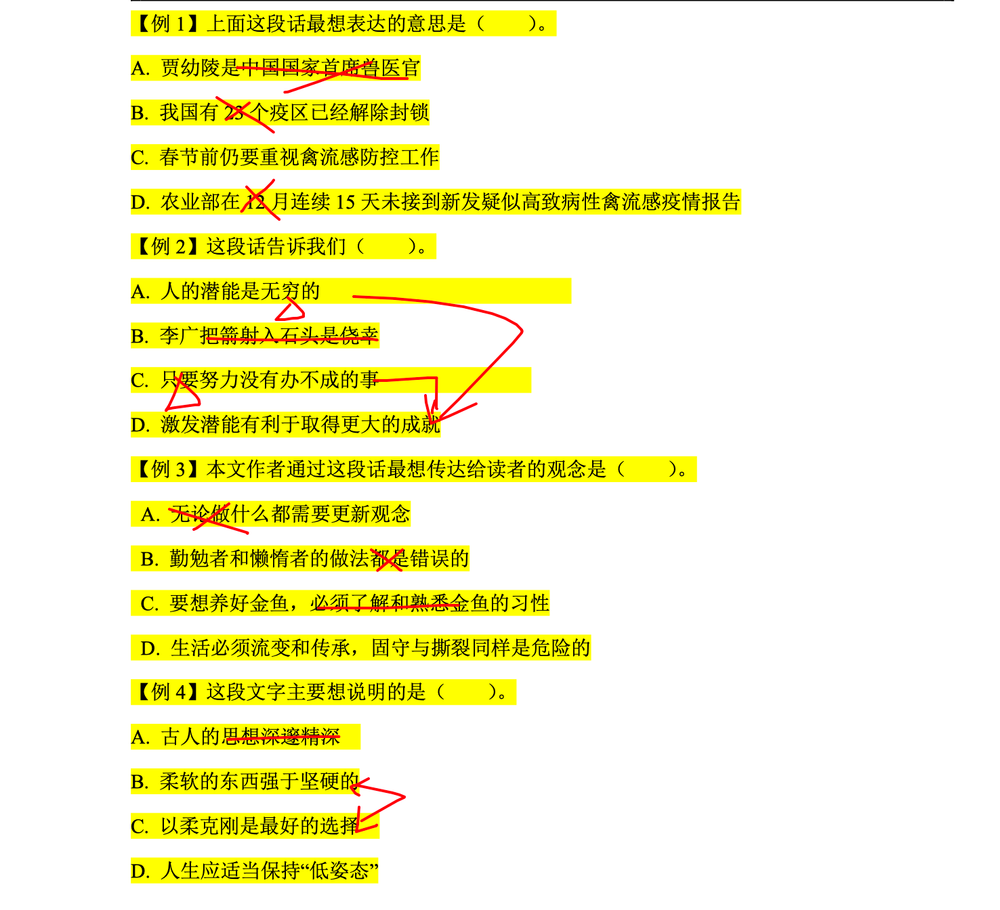意图判断主旨化——两个并非，一个标准
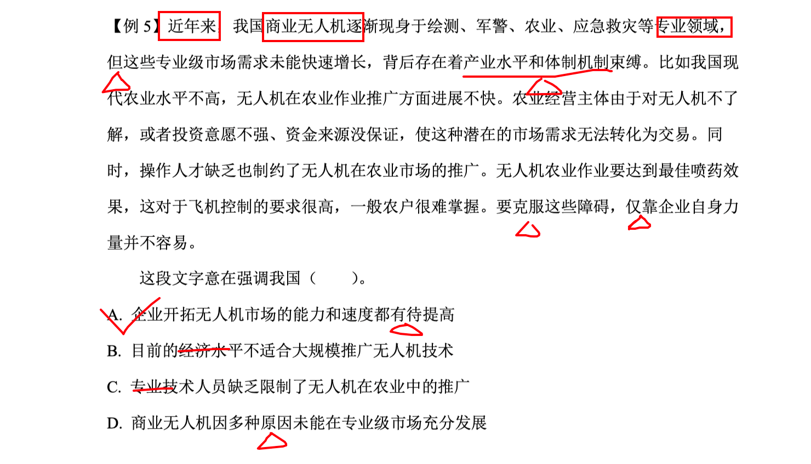 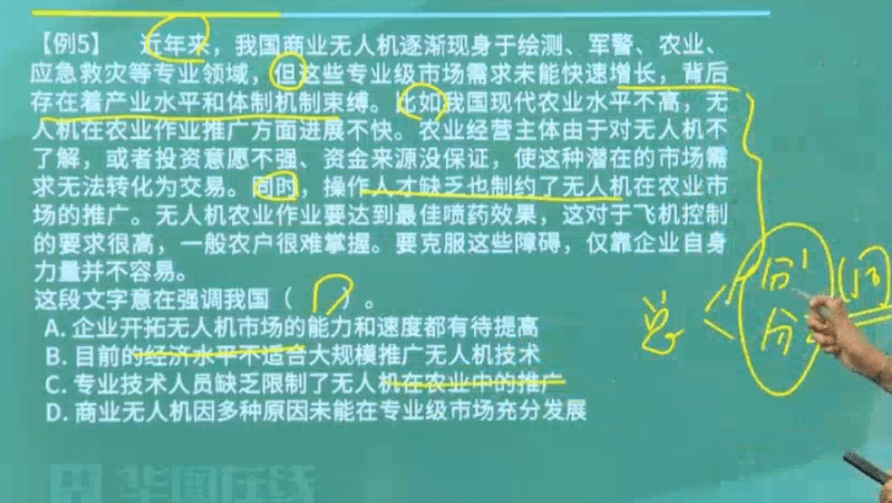态度观点
【辨别标志】
➢ 作者支持的观点是？
➢ 作者认为 XXXX 有无道理/是否正确？
➢ 作者对 XXXX 的态度是？
➢ 符合作者观点/原意的一项是？
➢ 下列说法与文章作者态度不符合的是？
【做题原则】
- 明确观点：提炼引导词 + 抓住关联词
- 笔者认为、XX认为、我希望等
- 隐含观点：提炼倾向性
- 关联词、设问、含有倾向性的词、反问【你怎么能这样】
- 没有观点：仅为客观陈述
- 没有任何评价
【杂糅观点的特殊句式】
- 笔者认为A
有观点， 至于 B无观点就见人见智了 - 无论A
无观点怎么样，B有观点都怎么样

这一类题目，仔细分析主旨
细节理解
认真读！ 认真读！
【题目类型】
➢ 典型的细节理解题
➢ 主旨化的细节理解题
【辨别标志】
➢ 下列说法正确/不正确的一项是？
➢ 下列表述符合/不符合文意的一项是？
➢ 下列理解正确/有误的一项是？
【做题原则】
- 错误选项的特点
- 无中生有
- 曲解文意
- 概念混搭
偷换概念
➢ 偷换时态
- 已然性时态：已经、曾经、了、过去、虽然。。。但是
【已经发生】 - 未然性时态：将、要、立即、马上、如果、即使。。也
【将要发生】 - 进行式时态：正、正在、在。。中、现在、着
任何时态上的偷换，直接就是❌错误！
➢ 偷换数量
- 较多量：较多、许多、大量、大多数、一片、不少等
- 较少量：较少、很少、少量、不多
- 中间量：某些、一些、部分
➢ 偷换逻辑关系
- 充分条件和必要条件的混淆
- 因果倒置
- 并列混淆为条件或因果关系
➢ 偷换概念/话题
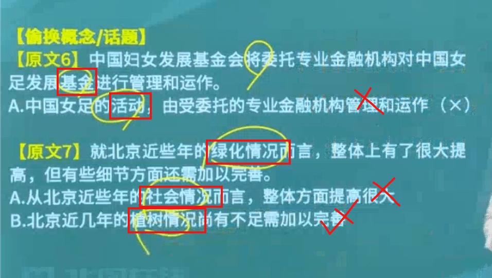➢ 偷换确定性表述与不确定性表述
- 不确定性表达：预测、断言、推测、可能、未必、也许、大概、大约
- 科技说明文
主旨化的细节理解题
- 正确表述是对于整个文段的归纳概括
- 错误表述是对于原文句子的偷换和曲解
问号
- 设问：有问有答案
- 反问：没有回答，但已经回答了
- 疑问：提问
变形的细节理解题
- 原因考查类：属于原因、不属于原因
- 了解文段陈述的状况，然后根据
“因为、由于” "因此、所以"等词去判断
- 了解文段陈述的状况，然后根据
- 目的考查类：主要是为了满足、主要作用、其目的是
- 寻找
为了、目的是、其作用为、结果是、等标志词
- 寻找
- 特点考查类： 最突出的特点、区别主要体现在、差异是
- 对比陈述主体特征、进行归纳概括
- 信息推断类：提问方式差异较大
- 特定语句寻找
第二节 语句表达
词句理解题
【题目类型】
- 词语理解题
- 语句理解题
- 名言警句：短 + 常识判断
- 划线语句：小语境
【辨别标志】
- 文中“XXX”如何理解？
- “XXX”指的是？
【做题原则】
- 定位原文，有效利用
冒号、破折号以及关联词 - 根据
上下文、前后句的小语境推测词语含义 - 排除
字面意思
词语指代题
【辨别标志】
文中“XXX”指代的是？
【做题原则】
- 定位原文
就近原则，前后句的主宾- 区分类型
- 注意提问的提示信息
语句表达
【考查能力】
➢ 规范表达—— 病句辨析题
➢ 优化表达
- 语句排序题
- 语句衔接题
- 下文推断题
语句排序题
【辨别标志】
将以上 6 个句子重新排列，语序正确的是?
【做题原则】
寻头不断尾＋差异句判断+紧密度验证
- 寻头断尾，AABC，排除BC，少数服从多数
- 在两个AA中，找到第一个不一样的，区分，时空、关联词、重复词
判断发语词 ＋ 紧密度验证
- 援引观点、背景铺垫、设问等常为发语词
- 不适合做发语词
- 反面论证：否则、不然、如果没有、如果不
- 补充类：当然、也、又
- 结论类：因此、所以、最终、终于
- 指代类表述：这、此
解题思路汇总
- 对比1&4， 两句话无法判断谁做开头
- 1的关键词是 【大脑🧠】，4的关键词是【研究】，进而->整体看重复词–大脑
- 排除 A B
- 1-6 & 1-3 对比，
- 1-3:
太过于紧密，没有喘气的机会，没有解释1的空隙， - 1-6: 紧接1的结尾–环境中有哪些威胁
- 6-2: 6的结尾
电刺激-> 2中的 回击、逃跑
- 1-3:
- 3中的 还， 与 6 并列
解题思路
- 对比3-5，都可以做开头
- 假设法
- 假如5开头
- 5-2: 但是2中的
也是，在1中并没有做铺垫，排除D - 5-3: 啰嗦：5: 屈原是。。 3: 屈原是。。排除C
- 5-2: 但是2中的
- 假如3开头
- 3-2-1-5是相同的
- 看 5-4 或是 5-6
- 5-4: 5的优秀和 而是接不上
- 5-6: 5的优秀 对应 学而优则仕
- 假如5开头
- 这道题太麻烦了。。。。
解题思路
- 四个选项各不相同
- 对比选项
- 3 反面论证的意思 排除B
- 5 总，有点像
- 6 假设，排除D
- 7 最终。。排除A
- 验证C项
- 要求有点高啊。。。。
解题思路
- 四个选项各不相同
- 对比选项
- 3 这些，排除 A
- 5 不确定，保留
- 4 不是，排除C
- 1 不确定保留
- 对比 1 - 5
- 1中的新内涵 与 3中的新内涵 有关联，1-3 在一块，就可以选B了
- 排序有点麻烦。。。